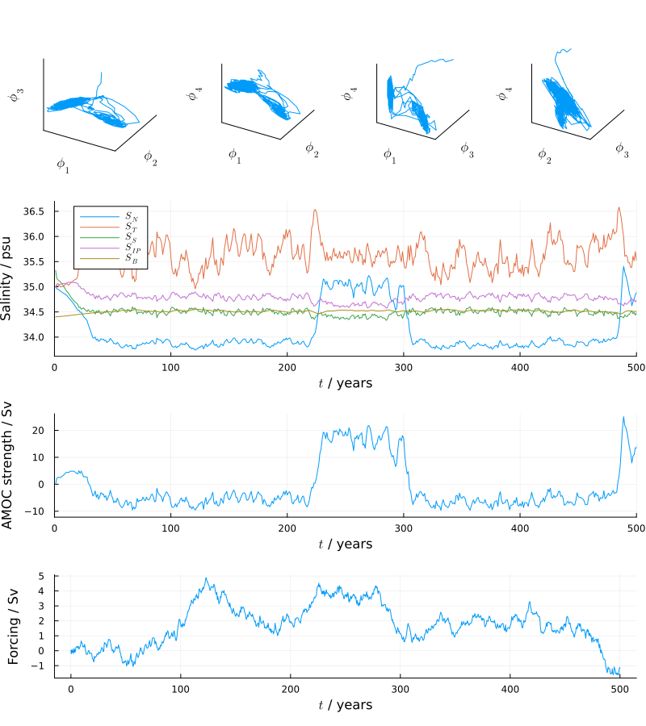

AMOCStochasticBoxModel
Documentation for AMOCStochasticBoxModel.
Julia implementation of Atlantic meridional overturning circulation (AMOC) stochastic box model described in Soons, Grafke & Dijkstra (2024). This is a stochastic extension of the five compartment AMOC box model described in Wood et al. (2019).
Usage example
To simulate the model using the default parameters, matching those in Soons, Grafke & Dijkstra (2024), and plot a visualisation of the solution, the following snippet can be run
using AMOCStochasticBoxModel
parameters = AMOCStochasticBoxModelParameters()
solution = simulate_model(; parameters)
plot_solution(solution)This produces the plot below with
- three-dimensional projections of non-dimensional state trajectories in top panel,
- simulated box salinities over time in second panel,
- simulated AMOC strength over time in third panel,
- and simulated stochastic freshwater forcing over time in bottom panel.

The AMOC strength can be seen to be stochastically switching between low and high levels, corresponding to bistable states of the model, with the stochastic freshwater forcing causing the model state to transition between the bistable states.
API reference
AMOCStochasticBoxModel.AMOCStochasticBoxModelAMOCStochasticBoxModel.AMOCStochasticBoxModelParametersAMOCStochasticBoxModel.amoc_strengthAMOCStochasticBoxModel.diffusion_coefficient!AMOCStochasticBoxModel.drift!AMOCStochasticBoxModel.plot_solutionAMOCStochasticBoxModel.simulate_modelAMOCStochasticBoxModel.solve_for_state_with_target_amoc_strengthAMOCStochasticBoxModel.θAMOCStochasticBoxModel.κAMOCStochasticBoxModel.ϕ₅
AMOCStochasticBoxModel.AMOCStochasticBoxModel — ModuleAtlantic meridional overturning circulation (AMOC) stochastic box model.
Details
AMOC stochastic box model described in Soons, Grafke & Dijkstra (2024). This is a stochastic extension of the five compartment AMOC box model described in Wood et al. (2019).
References:
- Soons, J., Grafke, T., & Dijkstra, H. A. (2024). Optimal transition paths for AMOC collapse and recovery in a stochastic box model. Journal of Physical Oceanography, 54(12), 2537-2552.
- Wood, R. A., Rodríguez, J. M., Smith, R. S., Jackson, L. C., & Hawkins, E. (2019). Observable, low-order dynamical controls on thresholds of the Atlantic meridional overturning circulation. Climate Dynamics, 53, 6A815-6834.
AMOCStochasticBoxModel.AMOCStochasticBoxModelParameters — Typestruct AMOCStochasticBoxModelParameters{T<:Real}Parameters for AMOC stochastic box model.
Details
Default values for parameters are taken from Soons, Grafke & Dijkstra (2024) with exception of smoothed step function scale parameter ϵ_θ which defaults to 1e-2 (compared to 1e-10 in paper) as this was found to have negligible effect on simulated paths while increasing smoothness of map from noise process to simulated paths, and noise process variance parameter ν which is set to 0.2^2 (various different values are used in paper) which was found to give sufficient variation in stochastic forcing to cause high probability of switch between bistable φ_ON and φ_OFF states over simulated time spans of order 500 years.
V_0::Real: Volume scaling parameter / m³V_1::Real: Non-dimensional volume of box 1 (northern, N)V_2::Real: Non-dimensional volume of box 2 (Atlantic thermocline, T)V_3::Real: Non-dimensional volume of box 3 (southern, S)V_4::Real: Non-dimensional volume of box 4 (Indo-Pacific, IP)V_5::Real: Non-dimensional volume of box 5 (bottom, B)t_d::Real: Time scaling parameter / sS_0::Real: Salinity scaling parameter / psuC::Real: Total salinity in basin / 10⁶⋅m³⋅psuα::Real: Thermal coefficient / kg⋅m⁻³⋅Kβ::Real: Saline coefficient / kg⋅m⁻³γ::Real: Proportion cold water pathη::Real: S-B box mixing parameter / SvK_N::Real: Northern subtropical gyre coefficient / SvK_S::Real: Southern subtropical gyre coefficient / SvK_IP::Real: Indo-Pacific gyre coefficient / SvF_N::Real: Northern freshwater flux / SvF_T::Real: Atlantic thermocline freshwater flux / SvF_S::Real: Southern freshwater flux / SvF_IP::Real: Indo-Pacific freshwater flux / SvT_S::Real: Southern box temperature / KT_0::Real: Base temperature / Kμ::Real: Heat transport coefficient / 10⁻⁶⋅m⁻³sKλ::Real: MOC-density difference coefficient / 10⁶⋅m⁶⋅(kg)⁻¹⋅sA_N::Real: Fraction of stochastic fresh water flux entering northern boxA_T::Real: Fraction of stochastic fresh water flux entering Atlantic thermocline boxA_S::Real: Fraction of stochastic fresh water flux entering southern boxA_IP::Real: Fraction of stochastic fresh water flux entering Indo-Pacific boxν::Real: Stochastic freshwater forcing non-dimensional process varianceϵ_θ::Real: Smoothed step function scale parameter
AMOCStochasticBoxModel.amoc_strength — Methodamoc_strength(φ, p)
AMOC strength (in Sv) as a function of non-dimensional state φ and parameters p.
Corresponds to downwelling in North Atlantic that transports salt between Atlantic thermocline (T), northern (N) and bottom (B) boxes in model.
AMOCStochasticBoxModel.diffusion_coefficient! — Methoddiffusion_coefficient!(dw, φ, p, t)
Compute diffusion-coefficient term in AMOC stochastic box model stochastic differential equation and write in place to vector dw given current non-dimensional state φ, parameters p and time t.
AMOCStochasticBoxModel.drift! — Methoddrift!(dφ, φ, p, t)
Compute drift term in AMOC stochastic box model stochastic differential equation and write in place to vector dφ given current non-dimensional state φ, parameters p and time t.
AMOCStochasticBoxModel.plot_solution — Methodplot_solution(solution; fig_size)
Plot solution solution of AMOC stochastic box model with figure size fig_size.
Plots three-dimensional projections of non-dimensional state trajectories in first panel, simulated box salinities over time in second panel, simulated AMOC strength over time in third panel and simulated stochastic freshwater forcing over time in last panel.
AMOCStochasticBoxModel.simulate_model — Methodsimulate_model(
;
parameters,
time_interval,
target_initial_amoc_strength,
solver_algorithm,
seed
)
Simulate AMOC stochastic box model with parameters parameters over time interval time_interval with state initialised to achieve a target AMOC strength target_initial_amoc_strength using stochastic differential equation solver algorithm solver_algorithm and random seed seed.
AMOCStochasticBoxModel.solve_for_state_with_target_amoc_strength — Methodsolve_for_state_with_target_amoc_strength(
a,
p;
φ_1,
φ_2,
φ_4
)
Solve for a non-dimensional state φ which gives a target AMOC strength a given parameters p and values for a subset of the state components.
AMOCStochasticBoxModel.θ — Methodθ(q, ϵ_θ)
Smoothed step function in variable q with scale parameter ϵ_θ.
Converges to Heaviside step function in q in limit ϵ_θ → 0.
AMOCStochasticBoxModel.κ — Methodκ(p)
Compute κ coefficient in definition of AMOC strength given model parameters p.
AMOCStochasticBoxModel.ϕ₅ — Methodϕ₅(φ, p)
Compute non-dimensional state component φ₅ corresponding to salinity of bottom (B) box from other state components φ and parameters p.
References
- Soons, J., Grafke, T., & Dijkstra, H. A. (2024). Optimal transition paths for AMOC collapse and recovery in a stochastic box model. Journal of Physical Oceanography, 54(12), 2537-2552.
- Wood, R. A., Rodríguez, J. M., Smith, R. S., Jackson, L. C., & Hawkins, E. (2019). Observable, low-order dynamical controls on thresholds of the Atlantic meridional overturning circulation. Climate Dynamics, 53, 6A815-6834.